Cache
Se trata de una de las principales formas de guardar información a corto plaso, esto con el fin de que los datos permanezcan accesibles una cierta cantidad de tiempo luego de su generación, para de ese modo evitar tener que generar el dato o realizar un proceso nuevamente en caso de que se requiera utilizar el dato una vez más.
Esto con el fin de reducir los tiempos de carga de la paguina web, y reducir el consumo de recursos de la paguina, esto se utiliza principalmente para aquellos archivos o datos que son requeridos multiples veces durante la ejecución de la paguina web, evitando de este modo un exceso de carga.
Nota: Para visualizar el "cacheStorage" es necesario ingresar a las herramientas de desarrollador en la sección de "aplicación", esta se encuentra debajo de "localStorage" y de "SessionStorage"
Nota: Para visualizar los cambios hechos en el "cacheStorage" se necesita actualizar la herramienta, esto se hace refrescando la paguina, del mismo modo que se hace con "localStorage" y de "SessionStorage
Implementación
Lo primera para trabajar con la cache es inicializar un "objeto cache", esto se logra haciendo uso del objeto constructor "caches", el metodo ".open", y el nombre del objeto que esta siendo inicializado:
Ejemplo
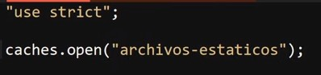
Los objetos cache se podrian considerar como un almacen de objetos(tabla), estos estan estructurados por diferentes secciones las cueles son:
Indice: Identificador numerico del archivo
Name: Nombre del archivo
Response-Type: Tipo de respuesta, ejemplo: "Basic"
Content-Type: Tipo de contenido, ejemplo: "text html"
Content-Length: Tamaño del archivo
Time Cached: Hora en la que fue almacenado el dato
Ejemplo
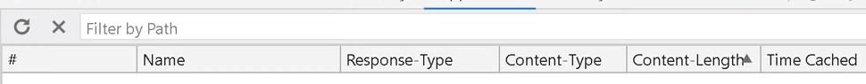
Al trabajar con la cache se utilizan promesas, razon por la cual para ingresar un dato en el "objeto cache" se utiliza el metodo ".then", al cual se le asigna una función flecha la cual recibe el objeto "cache", e cual se trata de un objeto especial que posee diversos metodos particulares para trabajar con el "cacheStorage".
´
Ejemplo
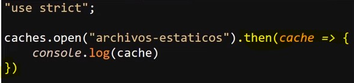
Los metodos particulares del objeto "cache" son:
-
.add( )
Este metodo envia una request, es decir toma una URL, la recupera y agrega el objeto de respuesta resultante a la cache dada, en otras palabras si tanto el objeto "cache" como el objeto a guardar existen este sera almacenado en la cache
Ejemplo
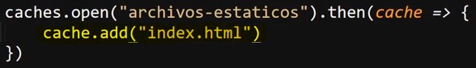
Resultado
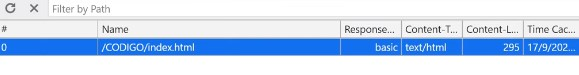
De este modo es como se puede indicar que se debe guardar el archivo "index.html" en la cache del equipo.
Una particularidad de este metodo es que es equivalete a usar "fetch( )", para simplificar la respuesta y lurgo usar "put( )" para añadir los datos a la cache, es decir este metodo permite simplificar el codigo.
-
.put(request, response)
Este metodo permite añadir objetos a la cache, no obstante ya que el metodo "add( )" representa una alternativa más eficiente para esto, lo más normal es que el metodo "put( )" se use unicamete cuando se desea realizar algun cambio en un elemento ya existe.
Ejemplo
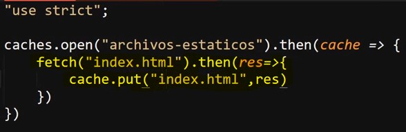
-
.addAll(request)
Este metodo realiza la misma función que "add( )", con la diferencia de que este metodo se encuetra adaptado para añadir multiples archivos a la cache.
Por lo tanto la diferencia radica en que ".addAll( )" no acepta strings, en su lugar recibe un array el cual debe contener todos los archivos que seran añadidos a la cache
Ejemplo
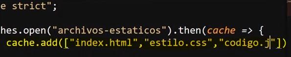
Resultado
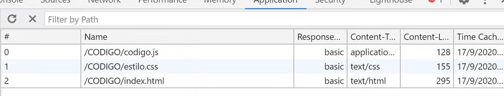
-
.match(request, options)
Devuelve una promesa que se resuleve con la respuesta asociada con la primera solicitud coincidente en el objeto almacenado, es decir este metodo reotorna una promesa, la cual retorna el primer elemento que coincida con la solicitud realizada.
Ejemplo
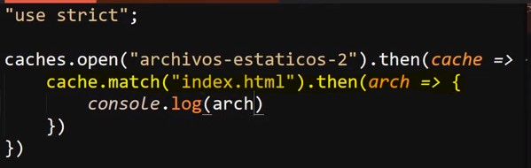
No olvidar que se usa el metodo ".then( )" debido a que ".match( )" retorna una promesa, debido a esto el ".then( )" se usa para definir el codigo a ejecutar con el elemento obtenido.
Resultado
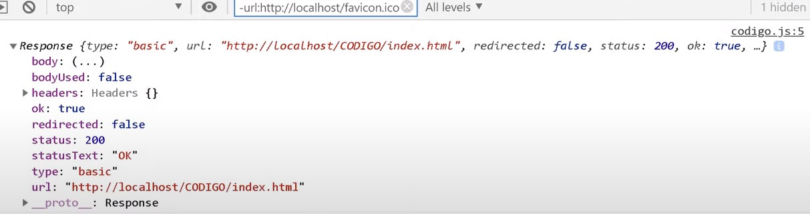
En este resultado se observa la respuesta de la promesa, la cual en este caso se trata de un archivo HTML, sin embargo, hasta el momento con los elementos impartidos no hay muchas acciones que se puedan realizar con este archivo, esto se desenglosara más adelante.
-
.matchAll(request, options)
Devuelve una promesa que se resuleve con una matriz con todas las solicitudes coincidentes en el objeto almacenado, es decir este metodo reotorna una promesa, la cual retorna una matris (tipo de array) con todos aquellos elemetos que councidan con la solicitud realizada.
Ejemplo
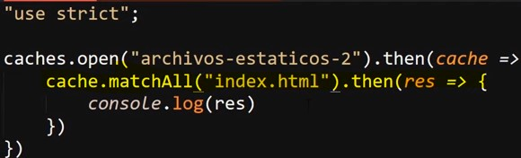
Resultado
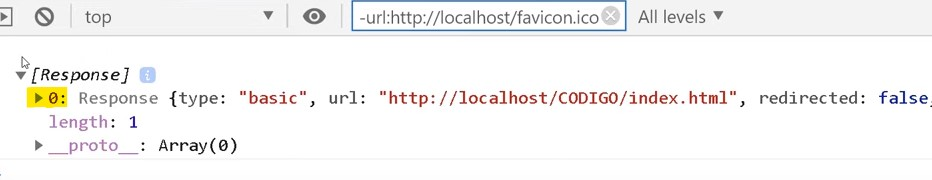
En este resultado se puede observar el indice del dato, lo que indica que este se encuentra en un array.
-
.delete( request, options)
Este metodo es exactamente el opuesto a ".add( )", ya que en vez de añadir un elemento a la cache lo elimina, con la caracteritica particular de retornar una promesa la cual retorna un valor booleano para indicar si el elemento se encontro y elimino (true) o no se pudo encontrar (false).
-
.keys( )
Este metodo retorna una promesa que a su vez retorna una matriz con los "keys" de los objetos almacenados en la cahce, es decir este metodo retorna una promesa que retorna un array con todos los elemetos almacenados en la cache.
Ejemplo
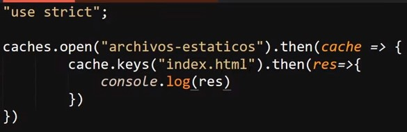
Resultado
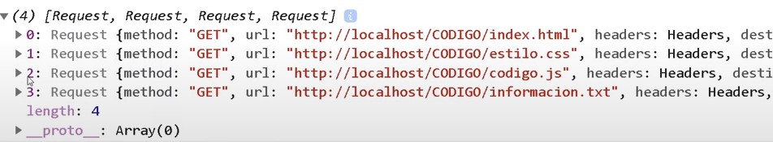